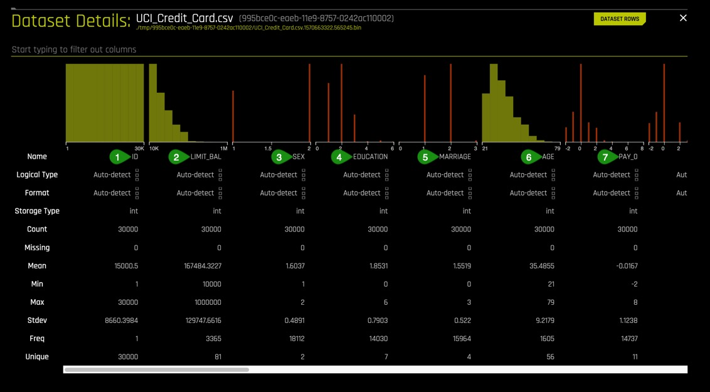
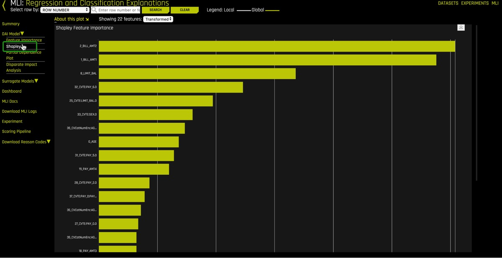
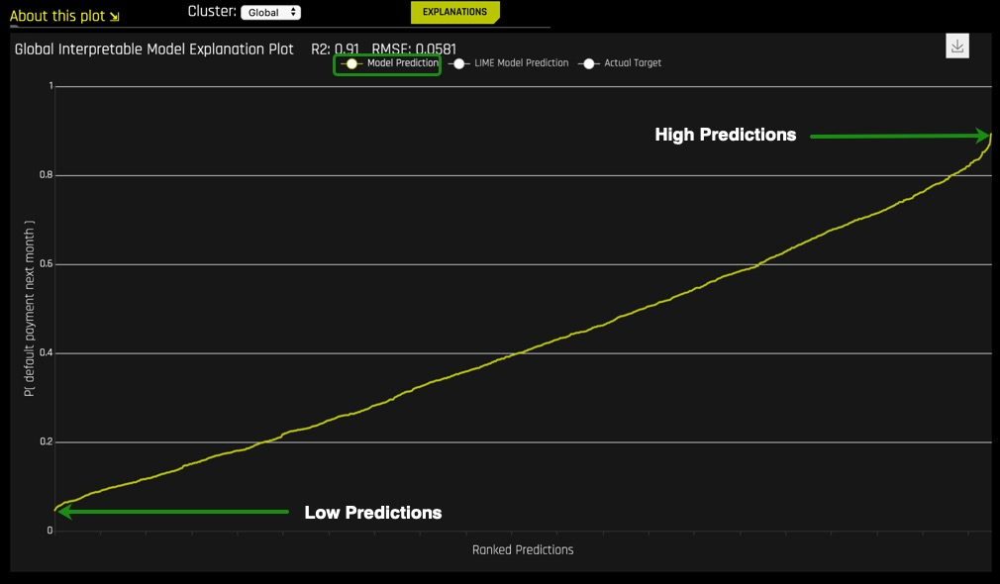

As the field of machine learning continues to grow, more industries from healthcare to banking are adopting machine learning models to generate predictions. These predictions are being used to justify the cost of healthcare e and for loan approvals or denials. For Regulated industries that are adopting machine learning, interpretability is a requirement. In "Towards a rigorous science of interpretable machine learning" by Finale Doshi-Velez and Been Kim" interpretability, is the "The ability to explain or to present in understandable terms to a human". This is a straightforward definition of interpretability. See the Deeper Dive and Resource section of the Goal section to read more about other takes on interpretability.
The motivations for interpretability are:
- Better human understanding of impactful technologies
- Regulation compliance and GDPR "Right to explanation"
- Check and balance against accidental or intentional discrimination
- Hacking and adversarial attacks
In this tutorial, we will generate a machine learning model using an example financial dataset and explore some of the most popular ways to interpret a generated machine learning model. Furthermore, we will learn to interpret the results, graphs, scores and reason code values of H2O Driverless AI generated models.
Note: We recommend that you go over the entire tutorial first to review all the concepts, that way, once you start the experiment, you will be more familiar with the content.
Deeper Diver and Resources
Learn more about Interpretability:
- Finale Doshi-Velez and Been Kim. "Towards a rigorous science of interpretable machine learning"
- FAT/ML
- XAI
License Key
In order to successfully install H2O Driverless AI, a license key is necessary. The license key can be obtained through the 21-Day Free Trial:
Get Environment
- Two Hour Trial
- Cloud Installation
- Local Installation
- Server Installation
Other prerequisites:
- Basic knowledge of Machine Learning and Statistics
About the Dataset
This dataset contains information about credit card clients in Taiwan from April 2005 to September 2005. Features include demographic factors, repayment statuses, history of payment, bill statements and default payments.
The data set comes from the UCI Machine Learning Repository Irvine, CA: University of California, School of Information and Computer Science
This dataset has a total 25 Features(columns) and 30,000 Clients(rows).
Download Dataset
1. Go to the UCI Machine Learning Databases and select the .xls file named default of credit card clients.xls. Clicking on the .xls file will download the Default Payments of Credit Card Clients in Taiwan from 2005 to your local drive.
2. Once in your local drive, open the default of credit card clients.xls file and delete the first row. This row has column names X1, X2, X3...X22, X23, Y that are nonessential to the DAI experiment.
3. After deleting the first row, save the file into your local drive with the following name and extension: UCI_Credit_Card.csv
Launch Experiment
1. Load the UCI_Credit_Card.csv to Driverless AI by clicking Add Dataset (or Drag and Drop) on the Datasets overview page.
2. Click on the UCI_Credit_Card.csv file then select Details.

Let's have a look at the columns:

Things to Note:
- ID - Row identifier (which will not be used for this experiment)
- LIMIT_BAL - Credit Limit
- Sex
- EDUCATION- Education Level
- MARRIAGE - Marital Status
- Age
- PAY0-PAY6: Payment Information including most recent repayment status
Status Values:
-2: Paid in full
-1: Paid with another line of credit
0: No consumption
1: 1 Month late
2: 2 Months late
Up to 9 Months late
3. Continue scrolling the current page to see more columns.(Image is not included.)
- BILL_AMT0-BILL_AMT6 - Recent credit card bills up to 6 months ago
- PAYAMT0-_PAY_AMT6 - Recent payment towards their bill up to 6 months ago
- default.payment.next.month- Prediction of whether someone will default on the next month's payment using given information.
4. Return to the Datasets page.
5. Click on the UCI_Credit_Card.csv file then select Predict.
6. Select Not Now on the First time Driverless AI, Click Yes to get a tour!. A similar image should appear:

Name your experiment UCI_CC Classification Tutorial
7. Select Target Column, then Select default.payment.next.month as the target.

8. Launch Experiment using the default settings suggested by Driverless AI.

9. While on the Experiment page:

Things to Note:
- Interpretability - The interpretability knob is adjustable. The higher the interpretability, the simpler the features the main modeling routine will extract from the dataset.
If the interpretability is high enough then a monotonically constrained model will be generated. - Time - The number of generations a genetic algorithm you can wait for. Higher the time the longer the wait since Driverless AI will work to engineer many features.
- Accuracy - The complexity of the underlying models. High accuracy will build complex underlying models.
- Notifications - System notifications
- Variable Importance - Engineered features
10. Select Interpret this Model

While the model is being interpreted an image similar to the one below will appear. The goal is to explain the model that was just trained, which will take a few minutes.

11. Once the MLI Experiment is Finished page comes up, select Yes, an image similar to the one below will appear:


Things to Note:
- Summary of some basic facts about the model
- Ranked variable importance in the space of the derived features (harder to understand)
- Accuracy of surrogate models, or simple models of complex models
- Ranked variable importance in the space of the original features (easier to understand)
Notice that some of the highly ranked variables of the original features (4) show up also as highly ranked variables of the derived features (2). The ranked original variable importance (4) can be used to reason through the more complex features in (2).
Machine Learning Interpretability Taxonomy
In the context of machine learning models and results, interpretability has been defined as the ability to explain or to present in understandable terms to a human [1]. Of course, interpretability and explanations are subjective and complicated subjects, and a previously defined taxonomy has proven useful for characterizing interpretability in greater detail for various explanatory techniques [2]. Following Ideas on Interpreting Machine Learning, presented approaches will be described in technical terms but also in terms of response function complexity, scope, application domain, understanding, and trust.
Response Function Complexity
The more complex a function, the more difficult it is to explain. Simple functions can be used to explain more complex functions, and not all explanatory techniques are a good match for all types of models. Hence, it's convenient to have a classification system for response function complexity.
Linear, monotonic functions: Response functions created by linear regression algorithms are probably the most popular, accountable, and transparent class of machine learning models. These models will be referred to here as linear and monotonic. They are transparent because changing any given input feature (or sometimes a combination or function of an input feature) changes the response function output at a defined rate, in only one direction, and at a magnitude represented by a readily available coefficient. Monotonicity also enables accountability through intuitive, and even automatic, reasoning about predictions. For instance, if a lender rejects a credit card application, they can say exactly why because their probability of default model often assumes that credit scores, account balances, and the length of credit history are linearly and monotonically related to the ability to pay a credit card bill. When these explanations are created automatically and listed in plain English, they are typically called reason codes. In Driverless AI, linear and monotonic functions are fit to very complex machine learning models to generate reason codes using a technique known as K-LIME discussed in Task 6.
Nonlinear, monotonic functions: Although most machine learned response functions are nonlinear, some can be constrained to be monotonic with respect to any given input feature. While there is no single coefficient that represents the change in the response function induced by a change in a single input feature, nonlinear and monotonic functions are fairly transparent because their output always changes in one direction as a single input feature changes.
Nonlinear, monotonic response functions also enable accountability through the generation of both reason codes and feature importance measures. Moreover, nonlinear, monotonic response functions may even be suitable for use in regulated applications. In Driverless AI, users may soon be able to train nonlinear, monotonic models for additional interpretability. Nonlinear, non-monotonic functions: Most machine learning algorithms create nonlinear, non-monotonic response functions. This class of functions is typically the least transparent and accountable of the three classes of functions discussed here. Their output can change in a positive or negative direction and at a varying rate for any change in an input feature. Typically, the only standard transparency measure these functions provide are global feature importance measures. By default, Driverless AI trains nonlinear, non-monotonic functions.
Scope
Traditional linear models are globally interpretable because they exhibit the same functional behavior throughout their entire domain and range. Machine learning models learn local patterns in training data and represent these patterns through complex behavior in learned response functions. Therefore, machine-learned response functions may not be globally interpretable, or global interpretations of machine-learned functions may be approximate. In many cases, local explanations for complex functions may be more accurate or simply more desirable due to their ability to describe single predictions.
Global Interpretability: Some of the presented techniques facilitate global transparency in machine learning algorithms, their results, or the machine-learned relationship between the inputs and the target feature. Global interpretations help us understand the entire relationship modeled by the trained response function, but global interpretations can be approximate or based on averages.
Local Interpretability: Local interpretations promote understanding of small regions of the trained response function, such as clusters of input records and their corresponding predictions, deciles of predictions and their corresponding input observations, or even single predictions. Because small sections of the response function are more likely to be linear, monotonic, or otherwise well-behaved, local explanations can be more accurate than global explanations.
Global Versus Local Analysis Motif: Driverless AI provides both global and local explanations for complex, nonlinear, non-monotonic machine learning models. Reasoning about the accountability and trustworthiness of such complex functions can be difficult, but comparing global versus local behavior is often a productive starting point. A few examples of global versus local investigation include:
- For observations with globally extreme predictions, determine if their local explanations justify their extreme predictions or probabilities.
- For observations with local explanations that differ drastically from global explanations, determine if their local explanations are reasonable.
- For observations with globally median predictions or probabilities, analyze whether their local behavior is similar to the model's global behavior.
Application Domain
Another important way to classify interpretability techniques is to determine whether they are model-agnostic (meaning they can be applied to different types of machine learning algorithms) or model-specific (meaning techniques that are only applicable for a single type or class of algorithms). In Driverless AI, decision tree surrogate, ICE, K-LIME, and partial dependence are all model-agnostic techniques, whereas Shapley, LOCO, and random forest feature importance are model-specific techniques.
Understanding and Trust
Machine learning algorithms and the functions they create during training are sophisticated, intricate, and opaque. Humans who would like to use these models have basic, emotional needs to understand and trust them because we rely on them for our livelihoods or because we need them to make important decisions for us. The techniques in Driverless AI enhance understanding and transparency by providing specific insights into the mechanisms and results of the generated model and its predictions. The techniques described here enhance trust, accountability, and fairness by enabling users to compare model mechanisms and results to domain expertise or reasonable expectations and by allowing users to observe or ensure the stability of the Driverless AI model.
The Multiplicity of Good Models
It is well understood that for the same set of input features and prediction targets, complex machine learning algorithms can produce multiple accurate models with very similar, but not the same, internal architectures [3]. This alone is an obstacle to interpretation, but when using these types of algorithms as interpretation tools or with interpretation tools, it is important to remember that details of explanations can change across multiple accurate models. This instability of explanations is a driving factor behind the presentation of multiple explanatory results in Driverless AI, enabling users to find explanatory information that is consistent across multiple modeling and interpretation techniques.
References
[1] Finale Doshi-Velez and Been Kim. Towards a rigorous science of interpretable machine learning. arXiV preprint, 2017
Deeper Dive and Resources
- Hall, P., Gill, N., Kurka, M., Phan, W. (Jan 2019). Machine Learning Interpretability with H2O Driverless AI.
- On the Art and Science of Machine Learning Explanations
- An Introduction to Machine Learning Interpretability
- Testing machine learning explanation techniques
- Awesome Machine Learning Interpretability
- Concept References
Global Shapley Values and Feature Importance Concepts
Global Shapley values are the average of the local Shapley values over every row of a data set. Feature importance measures the effect that a feature has on the predictions of a model. Global feature importance measures the overall impact of an input feature on the Driverless AI model predictions while taking nonlinearity and interactions into consideration.
Global feature importance values give an indication of the magnitude of a feature's contribution to model predictions for all observations. Unlike regression parameters or average Shapley values, they are often unsigned and typically not directly related to the numerical predictions of the model.
(In contrast, local feature importance describes how the combination of the learned model rules or parameters and an individual observation's attributes affect a model's prediction for that observation while taking nonlinearity and interactions into effect.)
- Scope of Interpretability.
(1) Random forest feature importance is a global interpretability measure. (2) Shapley and LOCO feature importance is a local interpretability measure but can be aggregated to become global. - Appropriate Response Function Complexity.Random forest, Shapley, and LOCO feature importance can be used to explain tree-based response functions of nearly any complexity.
- Understanding and Trust. (1) Random forest feature importance and global Shapley feature importance increases transparency by reporting and ranking influential input features (2) Local Shapley and LOCO feature importance enhances accountability by creating explanations for each model prediction. (3) Both global and local feature importance enhance trust and fairness when reported values conform to human domain knowledge and reasonable expectations.
- Application Domain. (1) Tree SHAP and Random forest feature importance is a model specific explanatory technique. (2) LOCO is a model-agnostic concept, but its implementation in Driverless AI is model specific.
Shapley and Feature Importance Plots
1. On the right-upper corner of the MLI page, select DAI Model, then Shapley.

The plot above is a sample of a Shapley plot. Shapley is an "old", very advanced tool, now being applied to machine learning. This plot shows the global importance value of the derived features. Notice the feature importance values are signed (scroll down to see the rest of the Shapley plot). The sign determines in which direction the values impact the model predictions on average. Shapley plots help by providing accurate and consistent variable importance even if data changes slightly.
Viewing the Global Shapley values plot is good place to start because it provides a global view of feature importance and we can see which features are driving the model from an overall perspective.
Derived features can be difficult to understand. For that reason, it also helps to look at this complex system from the space of the original inputs, surrogate models allows to us to do this.
2. Click on Surrogate Models, Random Forest, then Feature Importance.

The Feature Importance plot ranks the original features. These features are the original drivers of the model in the original feature space. These values were calculated by building a Random Forest between the original features and the predictions of the complex driverless AI model that was just trained.
3. View the Surrogate Model Summary, Random Forest summary:

This single Random Forest model of a complex Driverless AI model is very helpful because we can see that this is a trustworthy model between the original inputs to the system and the predictions of the system. Note the low mean squared error(0.0319), high R2 (97%).
4. Go back to the Shapley plot and find the feature importance of LIMIT_BAL. How important was LIMIT_BAL in the global feature importance space? Was LIMIT_BAL a main driver in this space?
5. Look for LIMIT_BAL in the Feature Importance under Surrogate Models. How important was LIMIT_BAL in the original feature importance space? Was LIMIT_BAL a main driver in this space?
Deeper Dive and Resources
Partial Dependence Concepts
Partial dependence is a measure of the average model prediction with respect to an input variable. In other words, the average prediction of the model with respect to the values of any one variable. Partial dependence plots display how machine-learned response functions change based on the values of an input variable of interest, while taking nonlinearity into consideration and averaging out the effects of all other input variables.
Partial dependence plots are well-known and described in the Elements of Statistical Learning (Hastie et al, 2001). Partial dependence plots enable increased transparency in Driverless AI models and the ability to validate and debug Driverless AI models by comparing a variable's average predictions across its domain to known standards, domain knowledge, and reasonable expectations.
Partial Dependence Plot
Through the Shapley Values and Feature Importance, we got a global perspective of the model. Now we will explore the global behavior of the features with respect to the model. This is done through the Partial Dependency Plot
1. Select Surrogate Models, Random Forest then Partial Dependecy Plot

Things to Note:
- These values of PAY_0 represent the average predictions of all persons that paid on time or did not use their credit card
- This value represents the average prediction of persons who were late one month for PAY_0
- PAY_0 =2 has an average default probability of 0.603, then the default probability slowly drops all the way to month 8. Does this make sense to you?
The results indicate that overall, in the entire dataset, the worst thing for a person to be in regarding defaulting with respect to PAY_0 is to be two months late. This behavior insight needs to be judged by the user who can determine whether this model should be trusted.
2. A good question to ask here is, is it worse to be two months late than being eight months late on your credit card bill?
3. Explore the partial dependence for Pay_2 by changing the PDP Variable at the upper-left side of the Partial Dependence Plot to Pay_2

4. What is the average predicted default probability for PAY_2 = 2?
5. Explore the partial dependence for LIMIT_BAL by changing the PDP Variable at the upper-left side of the Partial Dependence Plot to LIMIT_BAL, then hovering over the yellow circles.

The grey area is the standard deviation of the partial dependence. The wider the standard deviation, the less trustworthy the average behavior (yellow line) is. In this case, the standard deviation follows the average behavior and is narrow enough, therefore trustworthy.
6. What is the average default probability for the lowest credit limit? How about for the highest credit limit?
7. What seems to be the trend regarding credit limit and a person defaulting on their payments?
Deeper Dive and Resources
Decision Tree Surrogate Concepts
- Scope of Interpretability. (1) Generally, decision tree surrogates provide global interpretability. (2) The attributes of a decision tree are used to explain global attributes of a complex Driverless AI model such as important features, interactions, and decision processes.
- Appropriate Response Function Complexity. Decision tree surrogate models can create explanations for models of nearly any complexity.
- Understanding and Trust. (1) Decision tree surrogate models foster understanding and transparency because they provide insight into the internal mechanisms of complex models. (2) They enhance trust, accountability, and fairness when their important features, interactions, and decision paths are in line with human domain knowledge and reasonable expectations.
- Application Domain. Decision tree surrogate models are model agnostic
Decision Tree
Now we are going to gain some insights into interactions. There are two ways in Driverless AI to do this, one of them is the Decision Tree. A Decision Tree is another surrogate model.
1. Select Surrogate Models, then Decision Tree

Things to Note:
- The RMSE value is low and the R2 value is fairly high
- The values at the top of the Decision Tree are those variables of higher importance.
Variables below one-another in the surrogate decision tree may also have strong interactions in the Driverless AI model.
Based on the low RMSE and the fairly high R2, it can be concluded that this is a somewhat trustworthy surrogate model. This single decision tree, provides an approximate overall flow chart of the complex model's behavior.
2. What are the most important variables in the Decision Tree? How do those variables compare to the previous plots we have analyzed?
A potential interaction happens when a variable is below another variable in the decision tree. In the image below, an potential interaction is observed between variables PAY_0 and PAY_2.

Things to Note:
- Potential Interaction between PAY_0 and PAY_2. This observation can be strengthened by looking at the Shapley Plot and locating any PAY_0 and PAY_2 interactions.
- The thickness of the yellow line indicates that this is the most common path through the decision tree. This path is the lowest probability of default leaf node. Does this make sense from a business perspective?
It can be observed from the Decision Tree that most people tend to pay their bills on time based on the thickness of the path highlighted with green arrows. The people in the highlighted path, are those with the lowest default probability. This low default probability path on the Decision Tree is an approximation to how the complex model would place people in a low default probability "bucket".
Those who landed in that low default probability bucket had to have made their two most recent payments and have a most recent bill payment of greater than or equal to 2168.500 Taiwanese dollars.
The path to a low default probability can be confirmed by looking at the Partial Dependency plots (image below) for both PAY_0 and PAY_2. Both plots confirm the low default probability before month two. Below is the Partial Dependency PAY_0 plot with the low default probability values highlighted.

It is important to note that what we are confirming is not whether the model's results are "correct" rather how is the model behaving. The model needs to be analyzed, and decisions need to be made about whether or not the model's behavior is correct.

Things to Note:
- Decision Tree path for low default probability
- Decision Tree path for high default probability.
Based on the Decision Tree, to end up at the high probability of default bucket, a person would need to miss the first payment (PAY_0), be late on PAY_6 and make a low payment for PAY_AMT3. A history of poor repayment behavior from 5 months ago would more than likely place a person down the path of defaulting on their total bill payment. Just like the path with low default probability, the behavior of the variables for the high default probability need to be analyzed and ensure that their interactions and conclusions make sense.
Deeper Dive and Resources
K-LIME Concepts
K-LIME is a variant of the LIME technique proposed by Ribeiro et al (2016). K-LIME generates global and local explanations that increase the transparency of the Driverless AI model, and allow model behavior to be validated and debugged by analyzing the provided plots, and comparing global and local explanations to one-another, to known standards, to domain knowledge, and to reasonable expectations.
- Scope of Interpretability
K-LIME provides several different scales of interpretability: (1) coefficients of the global GLM surrogate provide information about global, average trends, (2) coefficients of in-segment GLM surrogates display average trends in local regions, and (3) when evaluated for specific in-segment observations, K-LIME provides reason codes on a pre-observation basis. - Appropriate Response Function Complexity
(1) K-LIME can create explanations for machine learning models of high complexity. (2) K-LIME accuracy can decrease when the Driverless AI model becomes too nonlinear. - Understanding and Trust
(1) K-LIME increases transparency by revealing important input features and their linear trends. (2) K-LIME enhances accountability by creating explanations for each observation in a dataset. (3) K-LIME bolsters trust and fairness when the important features and their linear trends around specific records conform to human domain knowledge and reasonable expectations. - Application Domain. K-LIME is model agnostic.
K-LIME Plot
The recent tasks have focused on the model's global behavior for the entire dataset, but how does the model behave for a single person? A great but complex tool for this is K-Lime.
1. Under Surrogate Models, select K-LIME.

2. On the green highlighted area of the K-LIME Plot click on Model Prediction, LIME Model Prediction then Actual Target . The K-LIME plot should look similar to the image below:

3. Click on Model Prediction again, this time the plot will look similar to the one below:

Things to note:
This plot is the predictions of the Driverless AI model from lowest to highest.
The x-axis is the index of the rows that causes that ranking to occur from lowest to highest.
4. Add Actual Target by clicking on it, the plot should look similar to the one below:

Things to Note:
- People who did not pay their bills on time
- People who paid their bills on time
Adding the Actual Target to the plot allows us to check if the model is not entirely wrong. From the plot, the density of line (2) near the low ranked predictions show that many people made their payments on time while those in line (1) had missed payments since the line is scattered. Towards the high ranked predictions, the density of line (1) shows the high likelihood of missing payments while the sparseness of line (2) shows those who have stopped making payments. These observations are a good sanity check.
5. Now, click on LIME Model Prediction.

Things to Note:
- The high value of R2=91% and low RMSE=0.0581 value show that this is a highly accurate linear model. In other words this surrogate model is good enough to proceed, and explains about 90% of the variance in the Driverless AI model predictions.
This single linear model trained on the original inputs of the system to predict the predictions of the Driverless AI model shows that the Driverless AI model predictions are highly linear. The plot above is an implementation of LIME or Local Interpretable Model Agnostic Explanations which often uses linear surrogate models to help reason about the predictions of a complex model.
Using the techniques together to find interactions and other interesting model behavior. What can you find using the Dashboard view?
Deeper Dive and Resources
- Explainable Artificial Intelligence XAI
- Explainable Artificial Intelligence XAI Google Slides
- DARPA-BAA-16-53 and
https://www.darpa.mil/attachments/XAIProgramUpdate.pdf - MLI Cheatsheet
- Testing Machine Learning Explanation Techniques
- Strata Data Conference
- MLI Meetup before Strata NYC 2018
- Practical Tips for Interpreting Machine Learning Models - Patrick Hall, H2O.ai (June 18)
- Building Explainable Machine Learning Systems: The Good, the Bad, and the Ugly (May 18)
- Interpretable Machine Learning (April, 17)
- Ideas on Machine Learning Interpretability
- Driverless AI Hands-On Focused on Machine Learning Interpretability - H2O.ai (Dec 17)